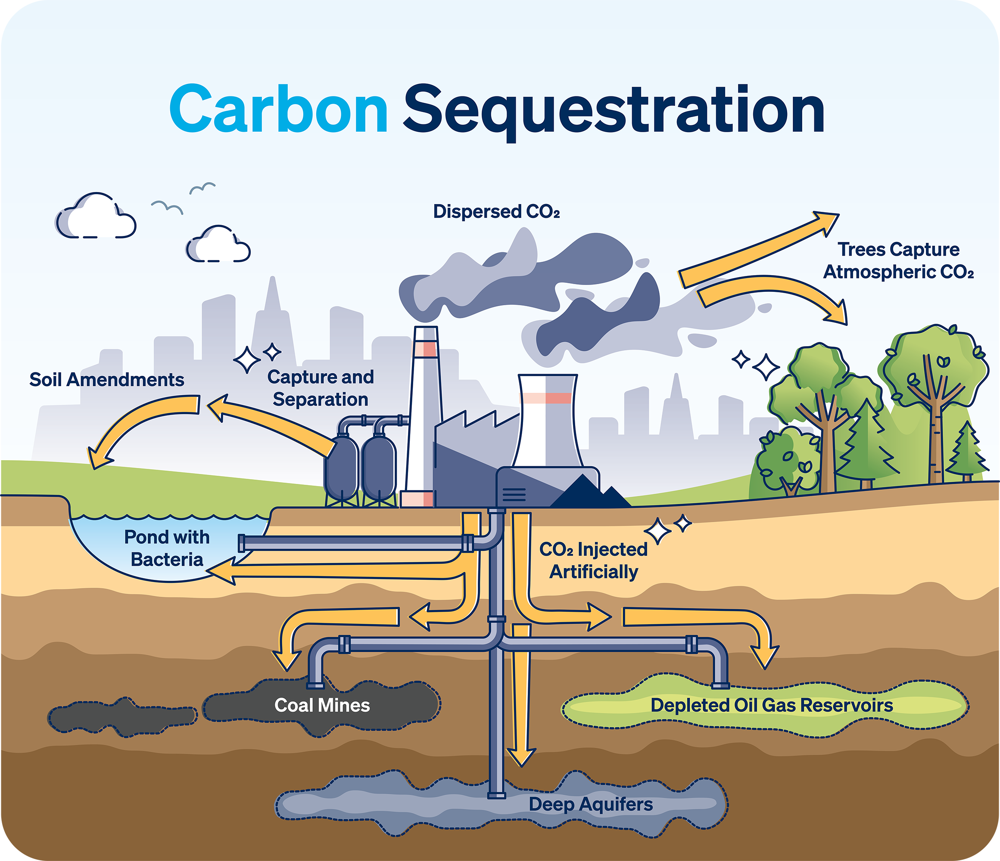

5 BENEFITS OF BIODIVERSITY
Biodiversity ensures that living things are able to thrive here on Earth. Biodiversity
loss is more than just the extinction of rare species, an idea that may sound remote
and so removed from our everyday lives. What many do not realise is that it directly affects
humans as well. Loss of biodiversity disrupts the essential mechanisms needed for food
production, health maintenance, and climate regulation.
IMAGE
Disease Resistance
Genetically diverse populations have better chances of surviving a
catastrophe like a pandemic. Diverse populations carry genetic codes
that make certain members of their group less vulnerable. When those
carrying these genetic codes reproduce, disease resistance is passed
along and the species’ survival is ensured.

IMAGE
Carbon Sequestration
Plants are essential for medicines. For example, 25% of drugs used in
modern medicine are derived from rainforest plants while 70% of cancer
drugs are natural or synthetic products inspired by nature. This means
that every time a species goes extinct, we miss out on a potential new
medicine.
IMAGE
Storm, Flooding, and Coastal Erosion
Coastal sea levels are rising and the World Economic Forum says
that as many as 410 million people could be affected by the end of
the century. While 59% of sea level rise is expected to be in tropical
Asia, countries such as China, France, Senegal, Nigeria, and the United
States are also at risk. Restoration and protection of coastal ecosystems
such as salt marshes and mudflats will be an important aspect of flood
prevention for low-lying coastal communities. Saltmarsh plants and
microbes stabilise and bind soil together. Coupled with greater root
biomass, these ecosystems can provide better resistance to soil erosion.

IMAGE
Food Security
Our food system and agriculture are strongly linked to biodiversity.
Millions of species work together to supply us with a variety of grains,
vegetables, fruits, and animal products. Food production relies on many
“services” that biodiversity provides. This includes pollination,
maintenance of soil fertility, resistance to pests and diseases, climate
maintenance, and water filtration.
IMAGE
Overall Health and Happiness
Whether it is strolling in a park in the city, going to the mountains, or
swimming in the sea, being in contact with nature has a host of benefits
for humans. Exposure to green and blue spaces outdoors improves our
working memory, attention control, and cognitive flexibility. Researchers
also found that aside from cognitive improvements, contact with nature is
associated with increased positive social interactions, happiness, having
a sense of meaning in life, as well as decreases in mental stress.